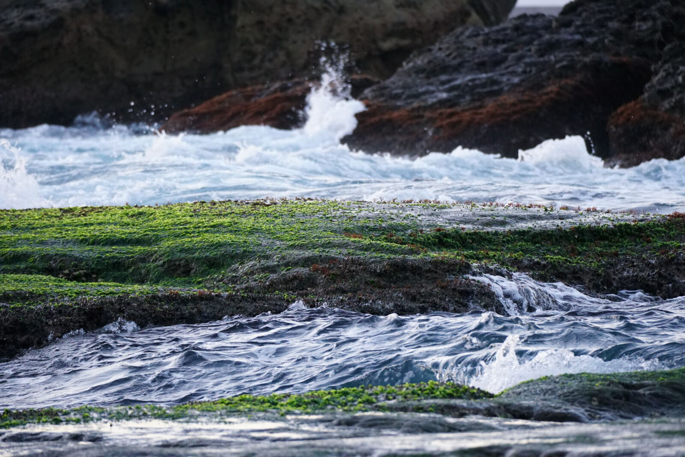

IB CAS 行程IB CAS Trips
創意、活動、服務是 IB 國際文憑課程核心。我們的 CAS 行程符合 IB 要求，並融入至少兩項聯合國永續發展目標。
CAS programmes that meet IB requirements and cover at least 2 UN SDGs in every trip.
用這個開始Start with this
知行學旅 Fun Horizon Educational Trips
教育旅行｜服務學習｜學術交流。我們為國際學校、一般學校、大學與企業規劃 IB CAS 服務學習、華語營、科目考察與學術參訪，每趟融入至少 2 項 SDGs。
Customized School Trips · Service / CAS Trips · Academic Visits
索取客製提案Request a proposal知行學旅是設立於台灣、致力推動聯合國永續發展目標（SDGs）的遊學（研學）公司，主要運營教育旅行與商務交流。我們擅長跨域合作，與旅行社、學校、企業組織建立夥伴關係，替客戶規劃並執行符合課程或交流目的的行程。
Fun Horizon Educational Trips is a Taiwan-based educational travel company dedicated to the UN Sustainable Development Goals (SDGs). We design and operate specialty educational trips and business exchanges for schools and enterprises worldwide, customised through partnerships with travel agencies, corporations and organisations.
每一項都可以直接帶入上方表單，作為提案的起點。
創意、活動、服務是 IB 國際文憑課程核心。我們的 CAS 行程符合 IB 要求，並融入至少兩項聯合國永續發展目標。
CAS programmes that meet IB requirements and cover at least 2 UN SDGs in every trip.
用這個開始Start with this
非 IB 學校也能在學習旅行中加入服務元素。我們分析需求，挑選合適的台灣在地組織共同規劃。
Not an IB school? We analyse your needs and partner with local organisations to add a service element.
用這個開始Start with this
台灣在地文化、華人歷史文化與原住民文化；並與華語中心及專業教師合作，提供短期華語營。
Taiwanese, Chinese and indigenous culture, plus short-term Chinese language camps with professional teachers.
用這個開始Start with this
依學科標準、課程目標或跨學科專題（PBL）設計的體驗式學科旅行。
Experiential trips built around subject criteria, curriculum goals or interdisciplinary PBL projects.
用這個開始Start with this
為大學與企業設計專業主題行程，串連學術單位、NPO 與企業，協助在地聯絡與接待。
Thematic visits for universities and companies, connecting academia, NPOs and industry in Taiwan.
用這個開始Start with this
人才庫擁有各領域持證專業講師，歡迎台灣企業與學校洽詢。
Certified instructors across many fields for schools and companies in Taiwan.
用這個開始Start with this創意（C）、活動（A）、服務（S）是 IB 國際文憑課程的核心。每條路線 5–7 天，點開 C／A／S 看完整活動清單。
學生將完整體驗：回收廢棄物 → PET 粒料 → 再生塑木 → 環保產品。Students follow the full loop: recycled waste → PET pellets → recycled plastic wood → eco-friendly products.


與台灣專業華語中心及中文教師合作，提供母語（文學）與非母語學習者的短期華語課程。
Short-term Chinese programmes for native (literacy) and non-native learners, with professional language centres and teachers.
文化體驗是所有行程的核心：傳統中華文化、台灣在地文化與原住民文化，依學校與學生需求設計。
Every programme includes cultural activities — traditional Chinese, local Taiwanese and indigenous cultures — tailored to your school.

| 項目 | 方案 A：中文課程 + 文化體驗Program A: Chinese Learning + Cultural Experience | 方案 B：文化體驗 + 中文應用Program B: Cultural Immersion + Chinese Practice |
|---|---|---|
| 方案優點Advantages | 兼顧語言學習與文化體驗，兩者分開安排，行程更有彈性、內容更多元。Balances both, with a flexible and diverse itinerary. | 浸潤式學習，活動多元，可依學習或學校課程需求設計。Immersive, activity-rich, with Chinese practice built in. |
| 中文學習Chinese learning | 於大學華語中心或私人華語教室上課。Classes at a university or private language centre. | 行程中結合語言練習活動，學生在行程中應用華語。Language practice woven into the itinerary. |
| 文化體驗Cultural experience | 由知行學旅安排或部分配合語言中心，依學生興趣設計。Arranged by us or partly with the language centre. | 由知行學旅安排，依學生興趣與需求設計。Arranged by us around student interests. |
| 主題學習Thematic learning | 視需求將主題融入中文課或文化活動。Themes integrated into classes or cultural activities. | 學校可指定主題，行程依主題設計。Itinerary designed around a theme your school specifies. |
| 地點與天數Location & days | 5–30 天；大學校園、單一城市或跨縣市。5–30 days; single or multiple cities. | 5–30 天；單一城市或跨縣市。5–30 days; single or multiple cities. |
| 計費方式Pricing | 語言課依語言中心標準；其餘行程由知行學旅計費。Classes charged by the language centre; other activities by us. | 依行程與活動內容由知行學旅計費。Bespoke itinerary arranged and charged by us. |
語言交換、在地學校交流、大學參訪、服務學習、在地企業組織參訪、SDGs 等，可依需求與預算安排。
Language exchange, local school visits, university tours, service learning, company visits, SDGs and more — arranged to your needs and budget.
方案皆含台灣在地食宿與交通安排，並有專業人員隨團帶領。
Includes local accommodation, meals and transport in Taiwan, led by professionals.
依學科標準、課程目標或跨學科專題（PBL）設計。每條都能依年級與天數調整。
| 行程 | 地點 | 科目 | 亮點 | 年級 | 天數 |
|---|---|---|---|---|---|
| 北海岸文化與地理考查Culture & Geography of the Northeast Coast | 台北・宜蘭・東北海岸Northeast Coast & Yilan | 地理、歷史Geography, History | 大屯火山群、海蝕海岸、黃金博物館Tatun Volcano Group, erosional coast, Gold Museum | 小學至高中All grades | 5–7 天 |
| 花蓮地理考查Geography Trip to Hualien | 台北・花蓮Taipei & Hualien | 地理、歷史Geography, History | 花東縱谷、斷崖、太魯閣峽谷、珊瑚礁與礫石海岸East Rift Valley, cliffs, Taroko Gorge, coral reefs, gravel beaches | 國中至高中Secondary | 5–7 天 |
| 北台灣科技與商業考察Technology & Business in Northern Taiwan | 台北・桃園・新竹Taipei, Taoyuan, Hsinchu | 科學、商業Science, Business | 青創基地、科學園區、半導體博物館Start-up hubs, Science Park, semiconductor museum | 國中至高中Secondary | 5–7 天 |
| 科學與地理考察Science & Geography in Taoyuan | 桃園Taoyuan | 化學、生物、地理Chemistry, Biology, Geography | 塑膠回收與再生全程考察、循環經濟、桃園海岸生態（藻礁、濕地、沙丘、石滬）Plastic regeneration, circular recycling, Taoyuan coast (algal reefs, wetlands, dunes, stone weirs) | 國中至高中Secondary | 5–7 天 |
| STEAM 考察STEAM Trip | 桃園・新竹Taoyuan, Hsinchu | STEAMSTEAM | 運算思維、邏輯編程、離線機器人、電子積木、科學園區、半導體博物館Computational thinking, logic programming, offline robots & tech-cube workshop, Science Park, semiconductor museum | 小學至高中All grades | 5–7 天 |
| 台灣中南部人文考察Culture & History of Central-Southern Taiwan | 台南・嘉義・南投Tainan, Chiayi, Nantou | 地理、歷史Geography, History | 台南歷史古都、嘉義阿里山、南投日月潭Historic Tainan, Alishan, Sun Moon Lake | 國中至高中Secondary | 5–7 天 |
| 南台灣文學與人文考察Literature & Humanities in Southern Taiwan | 高雄・屏東Kaohsiung, Pingtung | 文學、地理、歷史Literature, Geography, History | 城市文學走讀、熱帶氣候人文考查Literary city walks, tropical climate and culture | 小學至高中All grades | 5–7 天 |
| 體育交流與訓練Sports Training & Exchange | 台北／高雄Taipei / Kaohsiung | 體育（羽球、籃球）PE (badminton, basketball) | 羽球、籃球訓練或與在地學校體育交流Badminton/basketball training or exchange with local schools | 小學至高中All grades | 5–7 天 |
桃園科學與地理考察、桃園 CAS 路線都會走完這條流程。
串連學術單位、在地非營利組織與企業，我們的學術參訪不只停留在拜訪，而是深入交流與探索，了解台灣的學術、產業與社會文化脈絡，建立有意義的合作關係。
Connecting universities, local NPOs and businesses, our academic visits go beyond site visits to real exchange — insight into Taiwan's academic, industrial and socio-cultural context, and lasting partnerships.
地點：台北、台南或其他相關城市Taipei, Tainan or other related cities
知行學旅由擁有超過十年海外學校與非營利組織工作經驗的教師創立，在台灣與香港的國際學校及 NPO 累積了豐富的教學與教育旅行規劃經驗。
Founded by teachers and NPO workers with over 10 years of experience organising educational trips for international schools and NPOs in Taiwan and Hong Kong.
連結教育與企業界，透過客製的主題化旅行，協助青年學子拓展視野、實踐所學、接觸全球議題、培養全球公民意識。
To connect education and business, helping young people expand their horizons, practise what they learn and engage with global issues through travel.
協助學校和企業設計符合需求的遊學、學術或商務交流行程，並協同旅行社執行，減少溝通時間成本，更好地達成旅行目的。
To design itineraries aligned with each client's curriculum or goals and execute them with travel-agency partners — less back-and-forth, better outcomes.
待補：合作學校 logo／老師推薦。客戶提供素材後放在這裡（建議 3 則推薦語＋ 6–8 個學校 logo）。
標示「待確認」的部分，正式上線前請客戶確認。
可以。我們依學校課程或交流目的設計行程，並協同旅行社執行。頁面上的 CAS 路線、華語方案與科目考察都是起點範本，主題、地點與天數都能調整。
待確認 目前尚無公開的最低人數。表單提供「15 人以下」到「60 人以上」的選項，填寫人數後我們會在提案中說明。
依行程與活動內容由知行學旅計費。華語方案 A 的語言課依語言中心標準計費，其餘行程由知行學旅計費。具體報價 待確認，會隨提案提供。
華語與文化方案皆含台灣在地食宿與交通安排，並有專業人員隨團帶領。其他類型行程的包含項目 待確認，會在提案中列出。
是的，每趟行程至少融入 2 項聯合國永續發展目標（SDGs）。例如桃園路線對應 SDG 11、12、13、14。
可以。我們會先分析需求，挑選合適的台灣在地組織，共同規劃服務學習行程。